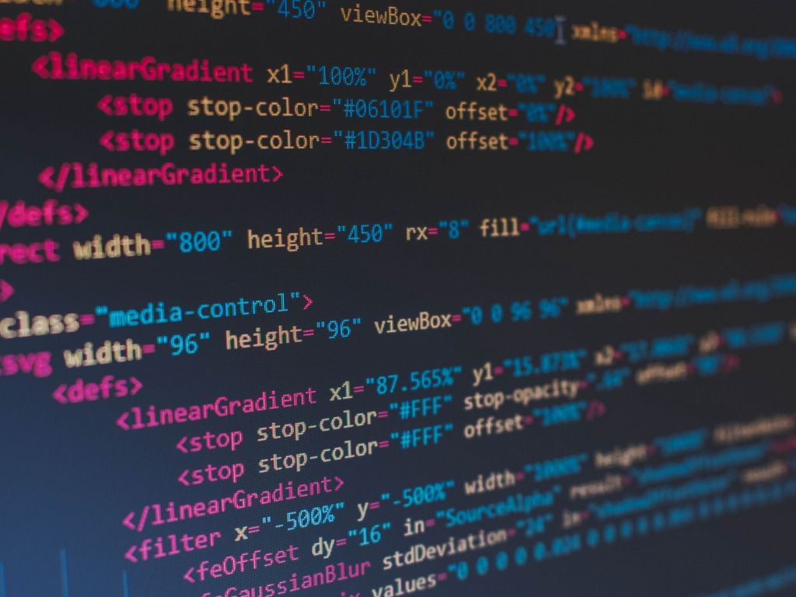

Portfolio
Projeto 1
Site Atleta Nazgul
Desenvolvi a primeira página de atleta de Futebol Americano. Criei a página para divugar minha história como atleta.

Projeto 2
Sírius Flag Football
Desenvolvi uma página para o time que fui treinador durante os últimos 5 anos, o Sirius Flag Football, time feminino da cidade de Corupá, SC.

Projeto 3
Atividades StartSe
Todas as atividades desenvolvidas durante o Bootcamp da TechAcademy, da StartSe estão reunidas aqui.
Projeto 4
Podóloga Ana Maria Catafesta
Página desenvolvida para divulgar o trabalho da Podologa Ana Maria Catafesta.